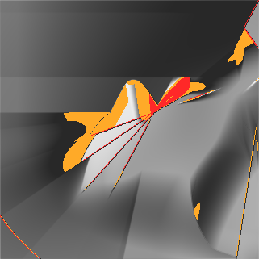
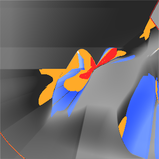
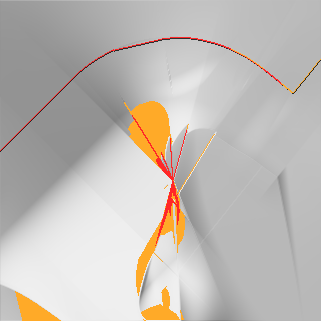
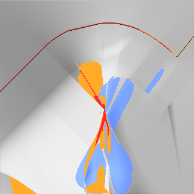
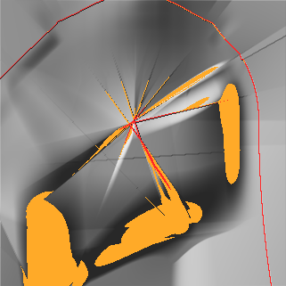
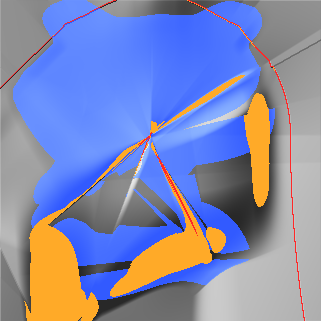
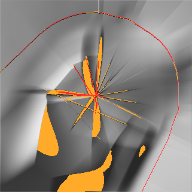
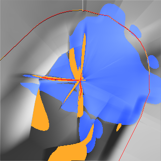
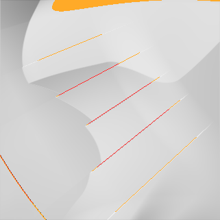
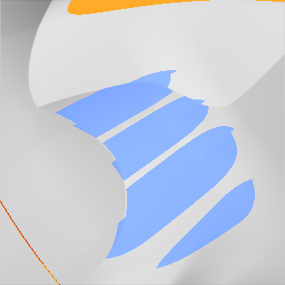

You picked "keep option 2 and build option 3 next", and wrote that a noisy broken baseline should not be averaged
away but fixed by construction (recorded as DEC-260). Option 2 stays. Option 3 was not built. Something smaller
replaced it, and it removes 90 % of the junction-dirt steps. It is on branch land/bug-171, not landed.
Option 3 weighted every point of a leg by how near it is, then blended the leg's height over those weights. On a leg 10 m away, that weighting is a bell curve about 2 m wide along the leg. So the ground in the gore would take the leg's height averaged over about 2 m of road. That is a smoother laid over the broken part, which is what your note rules out.
The broken part is one specific thing. The code found the leg's nearest point on the polyline, the chain of straight 3.5 m pieces the road centreline is stored as. Each straight piece has its own nearest point, so the "nearest point" jumped a whole piece at every corner of the chain.
The leg's direction is now defined continuously along it. At each corner of the chain, the direction is halfway between the two pieces that meet there. Along a piece it turns smoothly from one corner's direction to the next. The foot is the point where the query stands square to that direction. That is a quadratic in the position along the piece, solved exactly. Because the direction never jumps, the foot never jumps either: it slides.
The leg's height still comes from the same points the road is built on. Nothing about the network or any road's shape changed: the world fingerprint shows the network, profiles, junctions and places identical to main.
Same 9 random seeds and same census as before. A step is a jump of 2 cm or more inside a 0.5 mm move. A ramp is a continuous rise of more than 8 cm in a 5 cm move.
| option 2 | + continuous foot | |
|---|---|---|
| step sites ≥ 2 cm | 909 | 88 |
| ≥ 5 cm | 622 | 75 |
| ≥ 15 cm | 205 | 27 |
| ≥ 30 cm | 63 | 7 |
| ≥ 60 cm | 9 | 6 |
| leg foot hops (limb class) | 593 | 8 |
| ramp sites ≥ 15 cm per 5 cm | 109 | 113 |
| worst ramp per 5 cm | 1.37 m | 1.65 m |
How big is what is left, next to a wheel? The Ranger's tyre has a 0.368 m rolling radius. A 2–5 cm step is a road seam: felt as a tick, harmless. 15 cm is a kerb, a real jolt. 30 cm is most of the way to the wheel's axle and stops a slow wheel. Of the 27 steps of 15 cm or more left in 9 worlds, 16 are a different root (the seam where the resolver hands the road surface from one road to another), 5 are a junction-to-junction handover on a short road, and the rest are single sites. None is the foot hop.
The ramps did not improve. At the very centre of a bend, every point of the curve is equally near, so the foot swings round quickly and the ground rises steeply over a few centimetres. Those show as thin rays at the bend centre in picture D. The worst ramp (1.65 m per 5 cm) is a separate place: there the ground stands 5.5 m above the natural ground and above every leg's height, so the leg blend is not what lifts it.
The same five sites as the last dive. The physics ground, a 16 m square around each site, north up, one pixel per 5 cm, lit from the north-west. Left is option 2, right is option 2 plus the continuous foot. Red: a jump over 0.15 m between neighbouring pixels. Amber: over 0.05 m. Blue on the right: ground that moved by more than 2 cm. The long thin red line at the edge of some pictures is the designed asphalt edge.
The red fan is gone. The red patch at its tip remains: a steep ramp at the bend centre and the 1.55 m rival step next to it (a different root).


The remaining red line through the middle is the short road whose two ends are both junctions, swapping from one junction's blend to the other's. A different root.




All 13 foot hops here are gone. The thin star at the bend centre is now ramps (worst 0.67 m per 5 cm), not steps: the foot swinging round the centre.


The parallel red lines are gone. This is what most of the 593 sites looked like.


Not the same root, and this branch does not change it. Two roads leave one junction side by side, 6.3 m apart centre to centre, so their decks overlap, and they are 3.1 m apart in height 40 m from the junction. The surface switches from one road to the other where they are equally near: a 3.3 m step. That is a network-shape problem (two legs that close should not diverge that fast) and stays its own ticket.
The steps that remain are mostly the road-to-road seam (16 of the 27 over 15 cm). The bend-centre ramps are the limit of measuring "nearest point of the leg". At the centre that point is genuinely undefined, so fixing them means choosing a different construction for the gore, not repairing this one. I recommend the seam next: it is the biggest class left, and BUG-179's 3.3 m step is the same switch (the surface handing over from one road to another), so one look at it serves both tickets.